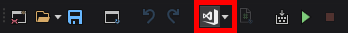
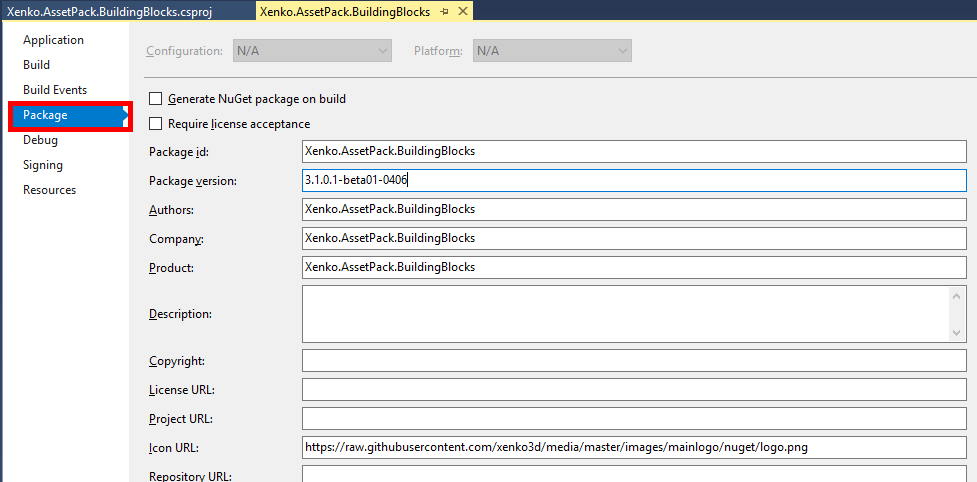
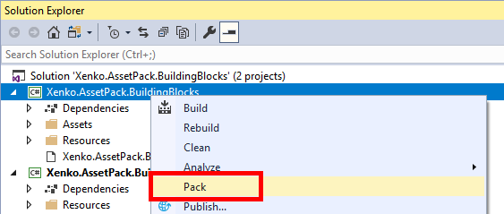

パッケージの作成
中級 プログラマー
プロジェクトを Visual Studio で開く
Note
Game Studio は将来、NuGet パッケージの作成を直接サポートする予定です。
はじめに、すべての変更を保存した後、Visual Studio でプロジェクトを開きます。これは、ツールバーの適切なボタンをクリックすることで簡単に行うことができます。

いくつかの注意点があります。
- 不必要なアセットは削除してください。（例えば、GameSettings など)
- 不必要な
PackageReferenceは削除してください。
オプション： パッケージプロパティのセットアップ
ソリューションエクスプローラーで、プロジェクトを右クリックして [プロパティ] をクリックします。
[パッケージ] タブに移動して、パッケージ バージョン、説明、プロジェクト URL 等々を編集します。

パックする
ソリューションエクスプローラーで、プロジェクトを右クリックして [パック] をクリックします。

Visual Studio は、プロジェクトのビルドとパックを行います。生成される
.nupkgは、bin\Debugかbin\Release、あるいはあなたの環境に依存した場所に出力されます。
発行する
これで、nuget.org などの NuGet リポジトリで .nupkg ファイルを公開することができます。
これを行う方法はいくつかあります。nuget.exe クライアントや dotnet.exe クライアント、nuget.org Upload Package サイトです。
詳細については、NuGet ドキュメントの Publishing packagesを参照してください。
あなたのパッケージが適切にリストアップされると、他の Stride ユーザーがそのパッケージを使用することができるようになります！